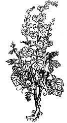
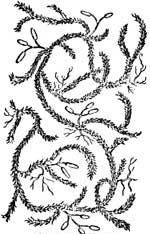
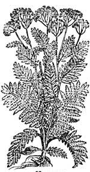
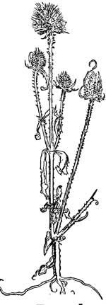
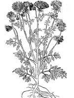
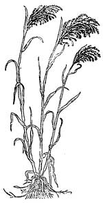
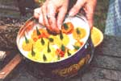
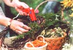
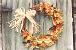
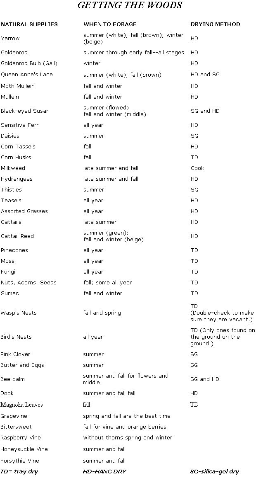

Between the woods, fields, and roadsides all around us, you have all the supplies you'll need to create unique natural wreaths and gifts. I've been collecting my supplies naturally for eight years and am continually finding something new that nature has to offer for my creations. When I forage for natural material, I either go out looking for a particular item or just walk, looking for what nature has to offer at that particular time of the year. The more you walk the woods and fields of your area, the more keen your eyes become. You'll soon have a place to collect your vines, another for collecting your nuts, and others still for your milkweed, moss, and pinecones. (Did I mention that you'll be walking a lot and getting some great exercise? What a terrific benefit from this new interest!)
Think you may not have room for all this? If you decide to start collecting nature supplies to create several wreaths for yourself, plus a couple of gifts for friends, all you need is an area big enough to hang your dried materials, room for a couple of trays of nuts, moss, nests, and fungi, and several cans to store your silica-gel flowers (more on that later). You'll also need a worktable when you decide to put a piece together. I often bring dried naturals home and hang them in the kitchen or on the front porch.
When I go on a foraging walk, I take several large baskets with handles and lots of bags. The baskets are great for flowers and grasses; the bags work well for moss, nuts, etc. A friend of mine prefers a nylon bag slung over his shoulder for everything. Remember
your hand clippers, as well as a canvas carpenter's apron with lots of pockets to store your small collectibles in.
Different supply needs will take you to different places. Looking for vines will take you to wooded roadsides, usually up or down an embankment (remember to be careful). If you need some milkweed, Queen Anne's lace, or yarrow, a large open field is a good source. Moss and fungi are usually found in the woods near streams or attached to the undersides of logs.
Vines
The best time to collect vines is in the spring and fall. Grapevine, bittersweet vine, forsythia, honeysuckle, and thornless raspberry vines may all be used for wreaths. Grapevine and bittersweet vine are easy to locate in the fall, as their leaves are the first to turn yellow. To remove grapevine and bittersweet vine from a tree, find a central vine among the hanging mass and tug gently as you back away from the tree. (The best-size vines are a half inch in diameter or smaller but using a variety of widths adds interest to your wreath.) Many vines should come out in a bunch. Final separation from the tree can be done with hand clippers. Forsythia, honeysuckle, and raspberry vines may be easily cut, branch by branch, off the bush. Tie a rope around the vine mass to put it in your car trunk or carry it home.
With your clippers, divide the vines into seven foot sections, Picking off bark and scraggly tendrils (the curlicues). I keep the good tendrils on the vine for a great woodsy look. Vines should be soaked overnight to insure flexibility in winding.
I have an old bathtub outdoors and soak my vines in rainwater. You can also use an old washtub, bending vines in a circle to fit. A good rainy day will soak vines lying on the ground.
Moss, Fungi, and Wasp's Nests
Sphagnum, lichen, and bun moss are just a few of the varieties available to pick-all offer different textures and shades of green. Some will come right up off the ground in sheets. Stream banks and forest floors are especially abundant with moss.
Larger fungi (called "punk" by some) are easily spotted growing on trees and old stumps at eye level; smaller pieces grow underneath fallen trees. The smaller ones can be gently picked or cut off. These come in various colors and stripes and add contrast and texture to a wreath.
I gather old, vacant wasp's nests in February and March from the rafters of our barn. (Spray first with a mild insect repellent if it makes you feel bet ter.) The honeycomb adds something unexpected to a wreath.
Flowers and Weeds
Goldenrod should be picked just as it turns yellow if you want the color bright. Pick Queen Anne's lace in full bloom or dried in the fall.
Yarrow, teasels, and grasses may be picked in different stages in varying shades. Hydrangeas should be picked after they change color and become slightly dry. Daisies and thistles should be picked in full bloom and then dried in silica gel.
Cut flowers and weeds at the base of the plant (take gloves for teasels and thistles). Daisies and Queen Anne's lace can be plucked off the stem for wreath use.
Find acorns, pinecones, and nuts on the forest floor and on the roads in the fall; save and dry peach, apricot, and plum seeds at home. Drying your foraged treasures thoroughly is very important to your final product. Drying kills any bugs or insects and preserves your material so it will last.
Hang Drying
Hang drying of naturals can be done as easily as hammering in a couple of nails, tying up a small rope line, or by using a wooden laundry rack. I use pipe cleaners to wrap around the end of the flower bunch I'm hanging and then secure it to the line or rack. Pipe cleaners work well since your flowers will shrink as they dry, and the cleaners can be easily adjusted. After blooms have thoroughly dried, store them in boxes if you don't plan to use them right away or set the bunches upright in coffee cans or large vases, Whether the flowers are in the process of drying or just in storage, make sure the room is dry, airy, and where things won't be touched or moved.
Tray Drying
Nuts, moss, fungi, bird's nests, pinecones, seeds, and bark should be placed on old cookie trays, screens, newspapers, or in shallow boxes to dry thoroughly before use. A shelf in a dry, warm room or out in the sun will do. Depending on the thickness of the material, these items can take from several days to several weeks to dry.
Pinecones, seeds, nuts, and leaves may also be dried in a moderately heated oven until they lose all their moisture.
Store dried materials in coffee cans, boxes, or baskets, away from moisture and dampness.
Silica Gel
Not all flowers retain their colors when dried naturally. The use of silica gel, a sandlike product that thoroughly and quickly dries natural materials, will preserve original colors very effectively.
I bought a five-pound can of silica gel in 1989 for $16. It will last me a lifetime. When my foraging year begins, my silica gel is always in use, from the first spring blossoms until the last blooms of fall.
In the morning, after the dew has dried off the plants (you want to pick when flowers are as dry as possible), cut a basket of blooms to be dried. Handling the flower gently, cut the stem about an inch from the blossom. Pour 1/2 -inch of silica gel in the bottom of a cookie tin or coffee can with a tight lid, then place flowers face down, being careful not to let them touch. Gently pour enough silica gel to cover flowers entirely, making sure to get the gel on all sides and between the petals. Then continue adding layers until the tin is full, making sure the last layer is silica gel. Cover tightly. More-delicate blossoms can dry in two to three days. Thicker blossoms can take from one to 10 days or some times more; all depends on the dryness of the bloom when it's picked and the moisture in the air while it is drying. Drying your flowers completely is very important.
Remember that reds will dry darker; whites will sometimes dry translucent or cream-colored. Pinks, yellows, oranges, blues, greens, and purples will all dry and retain the same color as when you picked them.
When you think the blossoms are dry, gently dig one out and check. If they are ready to be removed, carefully pour the silica gel out of the tin, gently picking out your dried flowers as you go. A small paintbrush is good for removing sand particles from your flowers. Between usage, store silica get tightly in its tin can.
Silica gel needs to be revived after three to four uses and even more frequently in rainy weather. When the blue crystals turn pink, you know it's time to recycle. Pour it on old cookie sheets about an inch thick and dry in a 325°F oven until the blue color reappears. This will take anywhere from 30 minutes to an hour. I open the door of the oven several times during this reviving process and wipe away any moisture that builds on the oven door. Return the gel to its tin and close tightly after it cools.
I store my silica-gel dried flowers in cookie tins or coffee cans and then label them. It's important to keep moisture away from the tins and to store them in a dry environment. If the flowers I've dried are thick or the weather has been rainy, I throw a tablespoon or more of silica gel in a labeled storage tin of already dried blossoms to help further absorb moisture.
My silica-gel drieds are used in wreaths, pot pourri, and natural arrangements. After I secure them in a creation, I spray them lightly with a clear acrylic to help further block out moisture. I wouldn't put my most delicate silicagel creations outdoors in harsh weather or direct sunlight, though I did keep a wreath outdoors last year through February and March and it held up beautifully. I urge you to experiment. You'll find silica get so magical that you'll be waiting impatiently for your first flowers to come up just so you can start preserving and creating beautiful things.
Milkweed Pods
My favorite foraged treasure, milkweed pods-dried in different shades-lend beautiful lines to your work. They have less tendency to crack if you pick them up in the summer, when they are still green. Snip the pods off and leave them in a box or bag for two or three days. This starts the drying process gradually. Gently split the pods with your thumbs and remove the insides, being careful not to damage the flesh of the pod within. Fill a cookie sheet with empty pods and cook in a 325°F oven until they start turning yellow, beige, and brown and seem to have dried completely. This method will give you a gor geous variety of colors and a long-lasting pod. You can still pick any pods you see in fall or winter, but they'll tend to be brittle. Spray your pods with clear acrylic for added strength and an attractive shine.
Once you've collected and dried whatever caught your eye on your walks through the woods, you'll want to show off your bounty.
The following project-a vine wreath with milkweedpod flowers-is excellent for first time wreath makers. It's a great conversation piece ("Is that really a wasp's nest?"), and its natural beauty blends in with almost any decor. And as you'll be gathering your own materials, the price will be more than reasonable.
Natural Vine Wreath With Milkweed-Pod Flowers
Makes one 12-inch wreath.
Supplies needed:
15 to 20 7-foot lengths of grapevine (I used grapevine but the vines mentioned are fine)
16 cooked milkweed pods (see previous instructions) Make sure these materials are dried before using:
2 large pieces of sphagnum moss
10 hemlock pinecones
15 stems of goldenrod
15 stems of green oats
15 stems of white yarrow
25 heads of Queen Anne's lace
4 small teasels
6 sensitive ferns
4 small wasp's nests
6 small fungi
4 bee-balm centers
Assorted nuts, acorns, and seeds for accent
6 yellow or orange strawflowers
10 yellow marigolds
8 orange marigolds
(The last three items I grow in my garden and silica-gel dry.)
Other Supplies:
15 strands of natural-color raffia
Hot-glue gun
8 hot-glue sticks
Hand clippers
Clear acrylic spray
Instructions for vine base:
1. Soak grapevine sections overnight.
2. Starting with one vine length, gently ease it into a circle, intertwining the ends as you would tie something, leaving both ends sticking out. (Don't clip ends until you have four or five vines wound; there will be some give in the beginning.) Take your second vine and tuck one end under the first vine (anywhere). Weave the vine over and then under the first vine until it's completely wound around. Continue weaving over and under with each vine. Take a look at your wreath as you add more, checking the shape for roundness. You may have one side looking fuller than the other-the less-full side is where you should be weaving in more vines.
3. Wind all your vines, peeling the bark off if you desire, cutting or leaving the tendrils. Trim any ends of vines sticking out.
4. Thoroughly dry your finished base either in the sun or near your heater before you decorate. (The glue won't work on a wet base.) Note: If a vine snaps or breaks while winding, don't be discouraged. Almost all of my first-time students get a snap on their first try at winding. It comes easily after a few attempts. Find another vine and try again. Some breaks don't even have to be removed from the base; they can be intertwined not to show. If all your vines are snapping, then they need more soaking.
Instructions for milkweed flowers:
1. Cook 16 milkweed pods (see previous instructions). Let cool.
2. Arrange four pods in a star formation with their pod bases meeting in the middle of the wreath.
3. Apply glue to the side of one pod near the bottom and hold together with adjacent pod for 1 minute or until they're glued together. Apply glue to the bottom side of the second pod and hold with third pod for another minute. Apply glue to the fourth pod on both bottom sides and hold in the last slot until dry. Glue hemlock pinecone in the center.
4. After all four are made, spray with clear acrylic for shine and strength.
Instructions for decorating the base:
1. Arrange four milkweed flowers on the right side of your vine base, spacing them evenly.
2. One at a time, check first to see where each milkweed flower touches the base; then glue at these points. Glue all four flowers in place.
3. Where your line of milkweed flowers ends at the top and bottom of your wreath, glue sphagnum moss for about 6 more inches. This will serve as a base to glue your drieds to. You'll be leaving part of your vine base exposed. (Since you worked so hard on it, I think it's nice for people to see it.) It will also be where you stick your bow later on.
4. Plan to use half your dried material on one area of moss, the second half for the other. Put aside five or six Queen Anne's lace heads, three pieces of yarrow, some oats, and three or four marigolds for filling in between the milkweed pods.
5. It's easiest to concentrate on one moss section at a time. Start with four 3-inch pieces of goldenrod; space them equally around and glue them to the mos-one at the end, two sticking out of the side, and one toward the middle of the wreath. Now take four pieces of oats and glue in between the goldenrod, spacing evenly. (Basically, decorating a wreath is learning to fill in one area at a time.) Next, take some yarrow and add. Your area should be starting to fill in somewhat. If there are gaps or holes, fill in with an extra piece or two of yarrow.
6. Trim off the stems of your teasels and glue on the top part of the moss, the other toward the end closer to the milkweed. Glue in several small pieces of fungi, sensitive ferns, and bee-balm middles. Make sure things are spaced around evenly.
7. Take three orange marigolds and two strawflowers and arrange them so the color is distributed evenly. Glue them down.
8. Add any nuts, seeds, and wasp's nests you might want to use.
9. Now stand back and take a look at what you've done thus far. (You shouldn't be able to see any shape problems or holes when you're right on top of the wreath. Standing back for a minute and getting a good perspective is important in producing a professional-looking wreath.) Queen Anne's lace is a super filler, so-still staying in one section-fill any holes, even up the inner or outer sides, and add another piece of color if needed. Now stand back again and you should have your one section full and finished.
10. For your second moss section, follow the exact same procedures as you did with the first (steps 5 through 9).
11. Take the Queen Anne's lace, oats, and yarrow you set aside and fill in between the milkweed flowers.
12. Stand back and look. The entire decorated side of your wreath should have an evenness to it. You may find a need to fill in here or there or a need for more color in places. Trust your own judgment and add whatever is needed.
13. The final touch is a raffia bow. Raffia looks super with all natural work. Taking all your raffia strands with one hand, find the midway point. Make a loop to one side; then take the bow and wrap it around the loop and pull it through the knot. Even out the loops and trim the raffia ends so they are also even. Glue your bow securely to the middle of the exposed base of the vines.
14. Lightly spray the dried-flower sections with clear acrylic.
Congratulations on completing your wreath! I'll bet you did a lot better than you thought you would. You probably even surprised yourself by how beautiful it looks.
I'm also sure you have more creative ideas on other natural wreaths you want to make. It's time to take another walk, cut some different vines, and go out looking for more unique natural materials. Maybe try tying the bow on the bottom or the top of the wreath next time; even no bow at all looks great sometimes. Plan to cover the entire wreath base next time and use it as a centerpiece. This is particularly beautiful when combined with seasonal, freshcut flowers.
I'm always making two wreaths in my mind as I'm finishing up one. But that's hardly a problem, because these lovingly made natural wreaths make unique gifts all year round. Your friends will really appreciate a present that comes from your own two hands (with a little help from Mother Earth).
The abundance of natural material to be foraged and used, plus the ever-changing textures and combinations that the fall season provides, never fails to get me excited about creating with nature. So gather some baskets, take a walk, and just think of all the possibilities.
Susi Jacobson hasforaged, created, and sold natural wreaths for eight years in rural Munster Pennsylva nia, alongside the woodcarver Tom McCarty and their daughter Holly. She teaches classes in natural designs and foraging and is currently working on a how-to book.
|
|
 |
 |
|
 |
 |
 |
|
 |
 |
 |
|
 |
 |
|